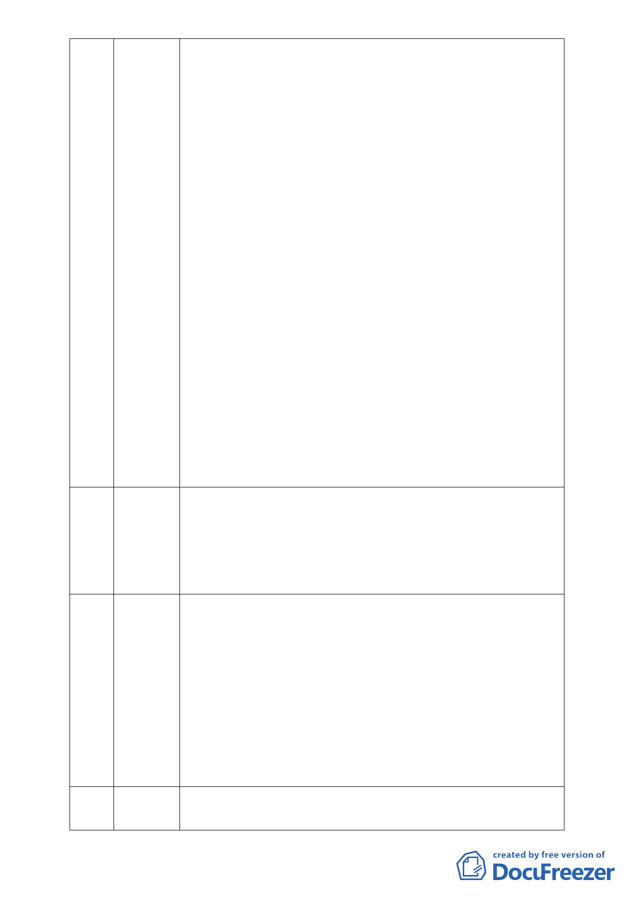

此為居心不良之三；本案申請個案變更迄今已歷 5 年餘，96 年 8 月
至 99 年 8 月整整 3 年間申請作業幾乎完全停頓，外界以為有高度智
慧之「上人」已指示不要繼續申請開發了，沒想到慈濟基金會於今
年 9 月五都選舉已進入緊鑼密鼓時刻，趁機又再動起來，台北市都
市計畫委員會也乖順的配合，密集開會，擺著一副要快速通過主要
計畫之態勢。唉！究竟慈濟在台北之勢力龐大，會員與志工人數眾
多，一票就是一票，市府官員豈敢輕忽？慈濟基金會利用此選舉白
熱化時刻全力推動本「高度爭議」的「環境破壞」案，很難讓人不
會有「趁 X 打 X」或「趁機 X X」之聯想，此為居心不良之四。
「慈濟基金會」設立宗旨之一在於追求「無災無難」，而「環境保護」
為該會「一步八法印」之法印之一。本開發案不僅本身暴露於潛在
災害風險地區，且會加重周邊地區之潛在災害風險，以及嚴重破壞
環境與生態；因此，本案嚴重違背慈濟基金會設立宗旨及志業。據
悉證嚴上人過去曾經呼籲「用鼓掌的雙手做環保」、「落實環保意識
於日常生活中」、「常存對大地疼惜的心」，以及多次對「台灣生態浩
劫」表達憂心，並且間接表達反對蘇花高興建的立場。本案之開發
明顯與上人之理念與實踐相違，慈濟基金會執行階層執意要台北市
政府都市計畫委員會通過此「環境生態破壞案」，勢將陷上人於不
義，以及嚴重損害慈濟形象。爰此，謹在此緊急呼籲慈濟基金會懸
崖勒馬，立即撤回本案，並將本基地恢復為池塘或是作合乎保護區
規定之使用。
42 陳立勳 本人為基層的生物老師，國中課本內有提到自然保留區與一般保護
區二者的差異，假如因慈濟為公益團體就給予保護區解禁的話，以
後本人該如何教育學生？試想全台灣有多少縣市首長讓台灣變成這
樣？且慈濟此地為溜地，即天然滯洪池之意，慈濟以 13 億元的代價
換取其國際形象值得嗎？
43 毛素玲 以一個台北市民及慈濟人的身分請教三個問題，1.請問市府責任是
否要保護人民的生命財產，慈濟當初此地被劃為保護區是因其東西
北側具潛在順向坡，惟主席又曾說本處非順向坡，請明確告知究竟
是不是順向坡 2.請教慈濟的師兄師姐上人是否知道此事，她願意做
這樣的事嗎？我家有三位慈濟委員，惟我們相信上人不會做這件
事，更心痛慈濟在人們心中也變了樣 3.請教委員們依據 10 月 25 日
的資料就可以做決定了嗎？之前有陳宏宇教授、陳文山教授、陳裕
峰老師等專家都認為此地非常危險，為何仍要如此踐踏？今天要談
的是保護區的價值，而非做好事就可以破壞。
44 蘇婷茹 本人居住內湖 20 年也是慈濟功德會會員，所準備影片請委員作參
考。慈濟要蓋志工大樓個人也很肯定，惟是否應予蓋在合法的土地
- 19 -